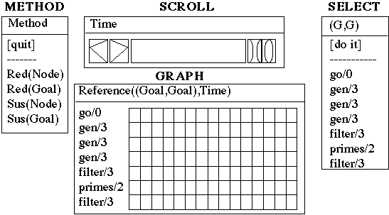

(62) KL1 Execution Data Collecting Tool: PerformanceMonitor
Machine: pseudo Multi-PSI
Environment: PIMOS
Language: KL1
Source Code: 200KB
Documents: Manual(Japanese)
Overview
A tool for collecting execution information for KL1.
Function
PerformanceMonitor is a tool to collect running information (changes
of reduction / suspension / communication-count for each nodes /
goals), and display it graphically on SIMPOS window system.
Configuration
PerformanceMonitor consists of 4 windows:

METHOD WINDOW is a menu window for information selection.
SELECT WINDOW is a menu window which restrict a information.
You can select goals which you want to display. GRAPH WINDOW
displays informations in a gray-scale graph. You can scroll this
window by SCROLL WINDOW.
Feature
PerformanceMonitor is independent from KL0 firmware because collecting
information are totally implemented by KL1. PerformanceMonitor runs on
a SIMPOS window system. If you want to port this program to another
platforms, you must rewrite all of display functions.
FTP
- KL1 Execution Data Collecting Tool: PerformanceMonitor [377K]

www-admin@icot.or.jp